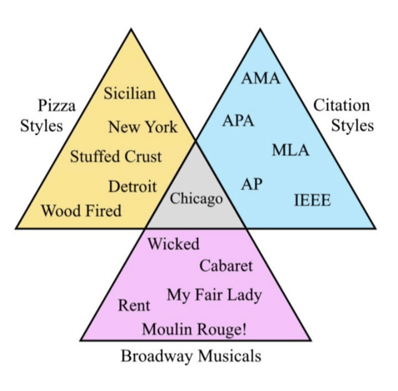
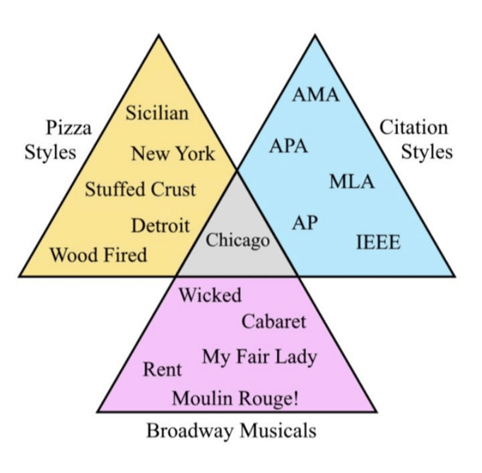
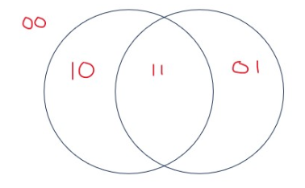
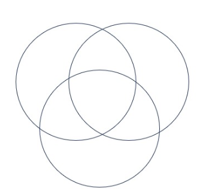
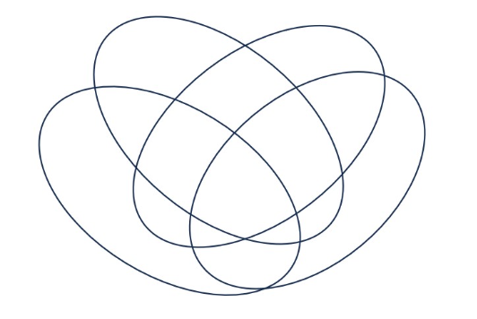
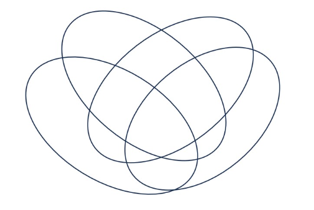

Evaluating predicates. Consider the following predicates, each of which has as its domain the set of all bitstrings whose leftmost bit is \(1\)
\(E(x)\) is \(T\) exactly when \((x)_{2}\) is even, and is \(F\) otherwise
\(L(x)\) is \(T\) exactly when \((x)_2 < 15\), and is \(F\) otherwise
\(M(x)\) is \(T\) exactly when \((x)_2 > 2\) and is \(F\) otherwise.
Sample response that can be used as reference for the detail expected in your answer: To prove that the statement \[\forall x ~L(x)\] is false, we can use the counterexample \(x = 1111\), which is a bitstring whose leftmost bit is \(1\) (so is in the domain). Applying the definition of \(L(x)\), since \((1111)_2 = 1 \cdot 2^3 + 1\cdot 2^2 + 1 \cdot 2^1 + 1 \cdot 2^0 = 8 + 4+2+1 = 15\) which is not (strictly) less than \(15\), we have that \(L(1111) = F\) and so the universal statement is false.
(Graded for correctness) 1 Use a counterexample to prove that the statement \[\forall x ( ~L(x) \to E(x)~)\] is false.
(Graded for correctness) Use a witness to prove that the statement \[\exists x (~L(x) \land M(x) ~)\] is true.
(Graded for completeness) 2 Translate each of the statements in the previous two parts to English.
Set properties. Let \(W = \mathcal{P}(\{1,2,3,4,5\})\).
Sample response that can be used as reference for the detail expected in your answer for parts (a) and (b) below:
To give an example element in the set \(\{ X \in W ~|~ 1 \in X \} \cap \{ X \in W ~|~ 2 \in X \}\), consider \(\{ 1,2\}\). To prove that this is in the set, by definition of intersection, we need to show that \(\{1,2\} \in \{ X \in W ~|~ 1 \in X \}\) and that \(\{1,2\} \in \{ X \in W ~|~ 2 \in X \}\).
By set builder notation, elements in \(\{ X \in W ~|~ 1 \in X \}\) have to be elements of \(W\) which have \(1\) as an element. By definition of power set, elements of \(W\) are subsets of \(\{1,2,3,4,5\}\). Since each element in \(\{1,2\}\) is an element of \(\{1,2,3,4,5\}\), \(\{1,2\}\) is a subset of \(\{1,2,3,4,5\}\) and hence is an element of \(W\). Also, by roster method, \(1 \in \{1,2\}\). Thus, \(\{1,2\}\) satisfies the conditions for membership in \(\{ X \in W ~|~ 1 \in X \}\).
Similarly, by set builder notation, elements in \(\{ X \in W ~|~ 2 \in X \}\) have to be elements of \(W\) which have \(2\) as an element. By definition of power set, elements of \(W\) are subsets of \(\{1,2,3,4,5\}\). Since each element in \(\{1,2\}\) is an element of \(\{1,2,3,4,5\}\), \(\{1,2\}\) is a subset of \(\{1,2,3,4,5\}\) and hence is an element of \(W\). Also, by roster method, \(2 \in \{1,2\}\). Thus, \(\{1,2\}\) satisfies the conditions for membership in \(\{ X \in W ~|~ 2 \in X \}\).
(Graded for correctness) Give two (different) example elements in \[W \times \mathcal{P}(W)\] Justify your examples by explanations that include references to the relevant definitions.
(Graded for correctness) Give one example element in \[\{ X \in W \mid (1 \in X) \land (X \cap \{3,4\} = \emptyset) \}\] Justify your example by explanations that include references to the relevant definitions.
(Graded for completeness) Consider the following statement and attempted proof:
\[\forall A \in W \, \forall B \in W ~\left(~((A \cap B) \subseteq A) \to (A \subseteq B)~\right)\]
(1) Towards a universal generalization argument, choose arbitrary \(A \in W, B \in W\) .
(2) We need to show \(((A \cap B) \subseteq A) \to (A \subseteq B)\).
(3) Towards a proof of the conditional by the contrapositive, assume \(A \subseteq B\), and we need to show that \((A \cap B) \subseteq A\).
(4) By definition of subset inclusion, this means we need to show \(\forall x ~( x \in A \cap B \to x \in A ~)\).
(5) Towards a universal generalization, choose arbitrary \(x\); we need to show that
\(x \in A \cap B \to x \in A\).(6) Towards a direct proof, assume \(x \in A \cap B\), and we need to show \(x \in A\).
(7) By definition of set intersection and set builder notation, we have that \(x \in A \land x \in B\).
(8) By the definition of conjunction, \(x \in A\), which is what we needed to show. QED
Demonstrate that this attempted proof is invalid by providing and justifying a counterexample (disproving the statement). Then, explain why this attempted proof is invalid by identifying in which step a definition or proof strategy is used incorrectly, and describing how the definition or proof strategy was misused.
(Graded for completeness) A Venn diagram is a chart of overlapping regions that illustrates the similarities differences of a collection of sets. You may have seen some examples in memes, including these (from a web search):
 
Mostly we see Venn Diagrams with 2 or 3 circles (or other shapes). In this question, we consider how to draw a Venn Diagram with 4 regions.
Here is a Venn Diagram with 2 circles. Each region is labelled (encoded) with a binary string with 2 bits. Notice that there are four regions: the region outside of the two circles, the region inside the left circle and not the right circle, the region inside the right circle and not the left circle, and the region inside both circles.

Generalize this encoding by encoding each region in this 3 circle Venn Diagram with a unique binary string with 3 bits.

Give an alternate representation of the regions in the 2 circle and 3 circle Venn Diagrams by labelling each circle with a letter (\(X\), \(Y\), \(Z\), or \(A\), \(B\), \(C\), for example) and then expressing each region as the result of combining these with set operations (like union, intersection, and set difference).
Here are two attempts at a Venn Diagram with 4 shapes, one with circles and the other with ellipses.
 
Is there anything missing from either diagram? (How many regions are there? How many regions should there be in order to use each 4 bit binary string exactly once in a generalization of the encoding we saw before?) If you had to choose one of these diagrams, which would you choose, and why?
(This question is adapted from one created by Miles Jones and is used with permission.)
Number properties. Consider the predicate \(F(~(a,b)~) = ``a \text{ is a factor of } b"\) over the domain \(\mathbb{Z}^{\neq 0} \times \mathbb{Z}\). Consider the following quantified statements
2
\(\forall x \in \mathbb{Z} ~(F(~(1,x~)))\)
\(\forall x \in \mathbb{Z}^{\neq 0} ~(F(~(x,1)~))\)
\(\exists x \in \mathbb{Z} ~(F(~(1,x)~))\)
\(\exists x \in \mathbb{Z}^{\neq 0} ~(F(~(x,1)~))\)
\(\forall x \in \mathbb{Z}^{\neq 0} ~\exists y \in \mathbb{Z} ~(F(~(x,y)~))\)
\(\exists x \in \mathbb{Z}^{\neq 0} ~\forall y \in \mathbb{Z} ~(F(~(x,y)~))\)
\(\forall y \in \mathbb{Z} ~\exists x \in \mathbb{Z}^{\neq 0} ~(F(~(x,y)~))\)
\(\exists y \in \mathbb{Z} ~\forall x \in \mathbb{Z}^{\neq 0} ~(F(~(x,y)~))\)
(Graded for completeness) Which of the statements (i) - (viii) is being proved by the following proof:
By universal generalization, choose \(e\) to be an arbitrary integer. We need to show that \(F(~(1,e)~)\). By definition of the predicate \(F\), we can rewrite this goal as \(\exists c \in \mathbb{Z}~(e = c \cdot 1)\). We pick the witness \(c = e\), which is an integer and therefore in the domain. Calculating, \(c \cdot 1 = e \cdot 1 = e\), as required. Since the predicate \(F(1,e)\) evaluates to true for the arbitrary integer \(e\), the claim has been proved. \(\square\)
Hint: it may be useful to identify the key words in the proof that indicate proof strategies.
(Graded for completeness) Which of the statements (i) - (viii) is being disproved by the following proof:
To disprove the statement, we need to find a counterexample. We choose \(2\), a nonzero integer so in the domain. We need to show that \(\lnot F(~(2,1)~)\). By definition of the predicate \(F\), we can rewrite this goal as \(1 \textbf{ mod } 2 \neq 0\). By definition of integer division, since \(1 = 0 \cdot 2 + 1\) (and \(0 \leq 1 < 2\)), \(1 \textbf { mod } 2 = 1\) which is nonzero so the counterexample works to disprove the original statement. \(\square\)
Hint: it may be useful to identify the key words in the proof that indicate proof strategies.
(Graded for correctness of evaluation of statement (is it true or false?) and fair effort completeness of the translation and proof) Translate the statement to English, state whether is it true or false, and then justify your answer (by proving the statement or its negation). \[\exists x \in \mathbb{Z}^{\neq 0}~ \exists y \in \mathbb{Z}^{\neq 0} ~(~\lnot(x = y) \land F(~(x,y)~) \land F(~(y,x)~)~)\]
(Graded for correctness of evaluation of statement (is it true or false?) and fair effort completeness of the translation and of the proof) Translate the statement to English, state whether is it true or false, and then justify your answer (by proving the statement or its negation). \[\forall x \in \mathbb{Z}^{\neq 0}~ \forall y \in \mathbb{Z}^{\neq 0} ~(~F(~(x,y)~) \to \lnot F(~(y,x)~)~)\]
(Graded for correctness of evaluation of statement (is it true or false?) and fair effort completeness of the translation and of the proof) Translate the statement to English, state whether is it true or false, and then justify your answer (by proving the statement or its negation). \[\exists x \in \mathbb{Z}^{\neq 0}~ \exists y \in \mathbb{Z}~(~F(~(x,y)~) \land F(~(x+1, y)~) \land F(~(x+2, y)~)~)\]
(Graded for correctness of evaluation of statement (is it true or false?) and fair effort completeness of the translation and of the proof) Translate the statement to English, state whether is it true or false, and then justify your answer (by proving the statement or its negation). \[\forall x \in \mathbb{Z}^{\neq 0}~ (~F(~(x,x^2)~) \land F(~(x,x^3)~)~)\]
Structural induction. Recall that we define the set of bases as \(B = \{ \texttt{A}, \texttt{C}, \texttt{U}, \texttt{G}\}\). The set of RNA strands \(S\) is defined (recursively) by: \[\begin{array}{ll} \textrm{Basis Step: } & \texttt{A}\in S, \texttt{C}\in S, \texttt{U}\in S, \texttt{G}\in S \\ \textrm{Recursive Step: } & \textrm{If } s \in S\textrm{ and }b \in B \textrm{, then }sb \in S \end{array}\] where \(sb\) is string concatenation. The function rnalen that computes the length of RNA strands in \(S\) is defined recursively by \(rnalen: S \to \mathbb{Z}^+\)
Basis step: If \(b \in B\) then \(rnalen(b) = 1\)
Recursive step: If \(s \in S\) and \(b \in B\), then \(rnalen(sb) = 1 + rnalen(s)\)
The function basecount that computes the number of a given base \(b\) appearing in a RNA strand \(s\) is defined recursively:
\[\begin{array}{llll} & & \textit{basecount} : S \times B & \to \mathbb{N} \\ \textrm{Basis Step:} & \textrm{If } b_1 \in B, b_2 \in B & \textit{basecount}(~(b_1, b_2)~) & = \begin{cases} 1 & \textrm{when } b_1 = b_2 \\ 0 & \textrm{when } b_1 \neq b_2 \\ \end{cases} \\ \textrm{Recursive Step:} & \textrm{If } s \in S, b_1 \in B, b_2 \in B &\textit{basecount}(~(s b_1, b_2)~) & = \begin{cases} 1 + \textit{basecount}(~(s, b_2)~) & \textrm{when } b_1 = b_2 \\ \textit{basecount}(~(s, b_2)~) & \textrm{when } b_1 \neq b_2 \\ \end{cases} \end{array}\]
(Graded for correctness of evaluation of statement (is it true or false?) and fair effort completeness of the translation and proof) Translate the statement to English, state whether is it true or false, and then justify your answer (by proving the statement or its negation). \[\forall b \in B ~\exists s \in S ~(~rnalen(s) = basecount(~(s,b)~)~)\]
(Graded for correctness of evaluation of statement (is it true or false?) and fair effort completeness of the translation and of the proof) Translate the statement to English, state whether is it true or false, and then justify your answer (by proving the statement or its negation). \[\forall s \in S~ (rnalen(s) > basecount( ~(s,\texttt{A})~))\]
(Graded for correctness of evaluation of statement (is it true or false?) and fair effort completeness of the translation and of the proof) Translate the statement to English, state whether is it true or false, and then justify your answer (by proving the statement or its negation). \[\forall s \in S~ \forall b \in B ~( basecount( ~(s,b)~) > 0)\]